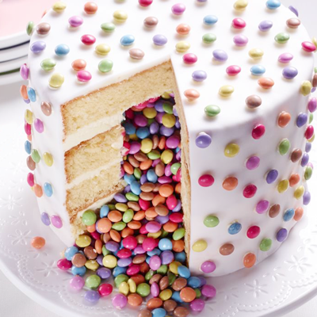

Les ingrédients
- 2 moules démontables de 20 cm de diamètre Pour la génoise :
- 4 Jaunes d’œufs
- 50g de sucre
- 2 sachets de sucre vanilliné
- 120g de beurre liquide
- 140g de poudre d’amande
- 1 Flacon d’arôme de citron Dr. Oetker
- 1 sachet de Finesse Zeste de citron râpé Dr. Oetker
- 4 blanc d’œufs
- 200g de sucre
- 240g de farine
- 2 cuillères à café de levure
- 120ml de lait Pour la garniture :
- 40g de beurre ramolli
- 80g de sucre glace
- 1 sachet de Finesse Zeste de citron râpé Dr. Oetker
- 100g de smarties Pour la décoration :
- 1 pâte à sucre blanche
- 1 paquet d’écriture décorative
- ingredient
La recette
- Couvre le fond des deux moules avec du papier sulfurisé et graisse les bords.
- Demande à un adulte de mettre le four à préchauffer à 150°C.
- Mélange le jaune d’œuf, le sucre, le sucre vanillé et le beurre pour avoir une consistance mousseuse. Ajoute les amandes, l’arôme et le zeste de citron.
- Bats le blanc des œufs en neige en ajoutant petit à petit le sucre. Incorpore les blancs à la préparation de jaunes d’œufs.
- Dans un autre récipient, mélange la farine et la levure. Ajoute cette préparation à celle contenant les œufs en mélangeant délicatement avec une spatule. Enfin, ajoute le lait.
- Sépare le mélange en deux parties et verse chaque mélange dans un moule. Fais cuire environ 35 minutes au four.
- Une fois les deux gâteaux cuits, laisse-les refroidir puis coupe les en deux horizontalement. Dans 2 génoise, découper deux cercles, au centre, de 10 cm de diamètre environ.
- Pose une des deux génoise encore entière sur un plat à gâteau.
- Bats le beurre jusqu’à ce que le mélange blanchisse. Puis ajoute le sucre glace ainsi que le zeste de citron.
- Nappe la première génoise de crème au beurre et pose une génoise avec un trou. Nappe encore de crème au beurre et pose la deuxième génoise avec un trou. Nappe cette génoise et remplis le trou de smarties. Puis referme le gâteau avec une génoise sans trou, n’oublie pas de napper le dessus !
- Réserve le gâteau au frais pour au moins 2 heures.
- Abaisse la pâte à sucre sur le film et déroule-la sur le gâteau à l'aide du film. Applique le bord, sans plis, et lisse. Découpe la pâte à sucre qui dépasse. Applique les Smarties® réservés à l'aide de l'écriture décorative.
Pour faire la génoise :
Pour faire la garniture :
Pour faire la décoration :